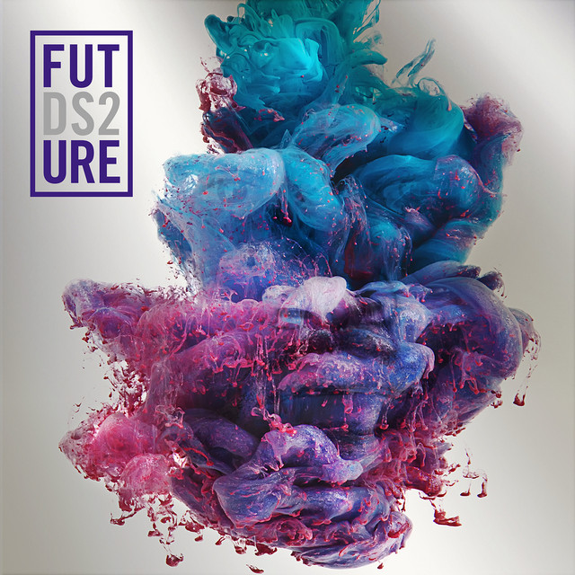

Ο Nayvadius DeMun Cash (γεννημένος στις 20 Νοεμβρίου 1983), γνωστός επαγγελματικά ως Future, είναι Αμερικανός ράπερ, τραγουδιστής-τραγουδοποιός και παραγωγός δίσκων. Γνωστός για τα φωνητικά και την παραγωγική του παραγωγή, ο Future θεωρείται πρωτοπόρος στη χρήση Auto-Tuned μελωδιών στη μουσική παγίδα. Λόγω της διαρκούς δημοτικότητας αυτού του μουσικού στυλ, θεωρείται συνήθως ένας από τους πιο σημαντικούς ράπερ του η γενιά του.
ΜΕΓΑΛΥΤΕΡΟΙ ΔΙΣΚΟΙ ΤΟΥ FUTURE

Future

DS2